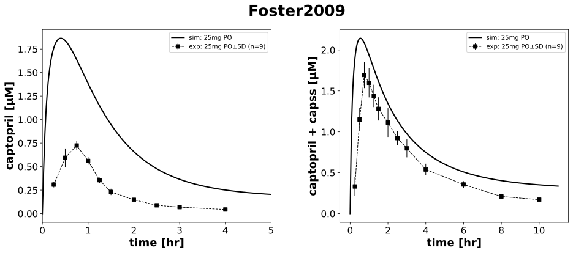

|  |
../../../../experiments/studies/foster2009.py
"""Foster2009"""
from typing import Dict
from sbmlsim.data import DataSet, load_pkdb_dataframe
from sbmlsim.fit import FitMapping, FitData
from sbmlutils.console import console
from pkdb_models.models.captopril.experiments.base_experiment import (
CaptoprilSimulationExperiment,
)
from pkdb_models.models.captopril.experiments.metadata import Tissue, Route, Dosing, Health, Fasting, \
CaptoprilMappingMetaData, PKPDData
from sbmlsim.plot import Axis, Figure
from sbmlsim.simulation import Timecourse, TimecourseSim
from pkdb_models.models.captopril.helpers import run_experiments
class Foster2009(CaptoprilSimulationExperiment):
"""Simulation experiment for Foster2009.
Determination whether co-administration of the hPEPT (human peptide transporters) substrates captopril and cephradine
alters the oral pharmacokinetics of either agent.
Here we use only data about PK of captopril alone.
- overnight fasting (appr. 10 hr), standart meal after 4 hr and 9 hr
"""
route = "PO"
dose = 25 # mg
yids = []
clabels = []
substances = []
# for painting plots
colors = {"control": CaptoprilSimulationExperiment.renal_colors["Control"]}
# creating dataset from PK data
def datasets(self) -> Dict[str, DataSet]:
dsets = {}
self.clabels = []
self.yids = []
self.substances = []
for fig_id in ["Fig1"]:
df = load_pkdb_dataframe(f"{self.sid}_{fig_id}", data_path=self.data_path)
for label, df_label in df.groupby("label"):
dset = DataSet.from_df(df_label, self.ureg)
if "total captopril" in label:
# converting from mg to mmole
dset.unit_conversion("mean", 1 / self.Mr.captot)
self.yids.append("[Cve_captot]")
self.substances.append("captot")
else:
# converting from mg to mmole
dset.unit_conversion("mean", 1 / self.Mr.cap)
self.yids.append("[Cve_cap]")
self.substances.append("cap")
self.clabels.append(label)
dsets[f"{label}"] = dset
# console.print(dsets.keys())
# console.print(dsets)
return dsets
def simulations(self) -> Dict[str, TimecourseSim]:
Q_ = self.Q_
tcsims = {}
tcsims[f"cap_{self.route}_{self.dose}"] = TimecourseSim(
Timecourse(
start=0,
end=60 * 11, # minutes
steps=400,
changes={
**self.default_changes(),
"BW": Q_(75, "kg"),
f"{self.route}DOSE_cap": Q_(self.dose, "mg"),
},
)
)
return tcsims
def fit_mappings(self) -> Dict[str, FitMapping]:
mappings = {}
for kr, dset_id in enumerate(self.clabels):
substance = self.substances[kr]
subjects = dset_id.split("_")[-1]
mappings[
f"fm_cap{self.route}{self.dose}_{substance}_plasma_acute_fasting_{subjects}"] = (
FitMapping(
self,
reference=FitData(
self,
dataset=dset_id,
xid="time",
yid="mean",
yid_sd="mean_sd",
count="count",
),
observable=FitData(
self,
task=f"task_cap_{self.route}_{self.dose}",
xid="time",
yid=self.yids[kr],
),
metadata=CaptoprilMappingMetaData(
tissue=Tissue.PLASMA,
route=Route.PO,
dosing=Dosing.SINGLE,
health=Health.HEALTHY,
fasting=Fasting.FASTING,
data=PKPDData.PK
),
)
)
# console.print(mappings)
return mappings
def figures(self) -> Dict[str, Figure]:
fig = Figure(
experiment=self,
sid="Figure",
num_rows=1,
num_cols=2,
name=f"{self.__class__.__name__}",
height=self.panel_height,
width=self.panel_width * 2,
)
plots = fig.create_plots(
xaxis=Axis(self.labels["time"], unit=self.units["time"]), legend=True
)
for ky, yid_unique in enumerate(["[Cve_cap]", "[Cve_captot]"]):
plots[ky].set_yaxis(self.labels[yid_unique], unit=self.units[yid_unique])
for kr, dset_id in enumerate(self.clabels):
yid = self.yids[kr]
if yid == yid_unique:
if "_captopril" in dset_id:
a = 0
plots[a].xaxis.max = 5
plots[a].xaxis.min = 0
else:
a = 1
# simulation
plots[ky].add_data(
task=f"task_cap_{self.route}_{self.dose}",
xid="time",
yid=self.yids[kr],
label=f"sim: {self.dose}mg {self.route}",
color=self.colors["control"],
)
# dataset
plots[ky].add_data(
dataset=dset_id,
xid="time",
yid="mean",
yid_sd="mean_sd",
count="count",
label=f"exp: {self.dose}mg {self.route}",
color=self.colors["control"],
)
return {
fig.sid: fig,
}
if __name__ == "__main__":
run_experiments(Foster2009, output_dir=Foster2009.__name__)
{kind=link}